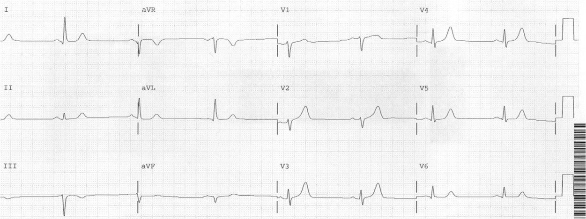
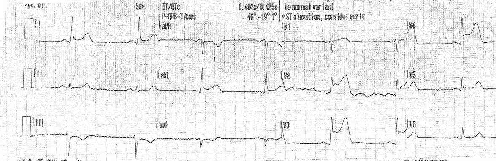
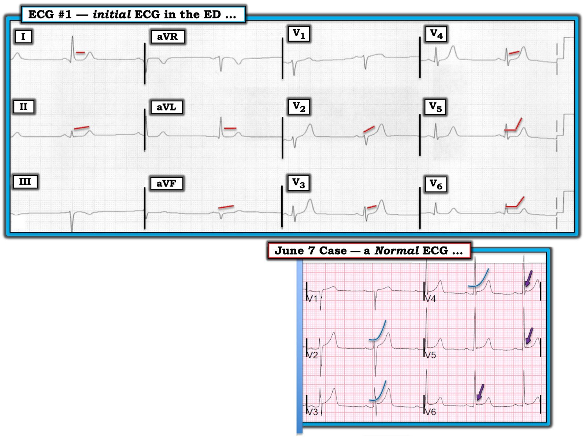

09/06/2019 — Bệnh nhân đau ngực đang thuyên giảm. Máy tính đọc điện tâm đồ tại khoa cấp cứu là hoàn toàn Bình thường.
Bản dịch tiếng Việt của bài "A patient with chest pain that is resolving. Computer interprets ED ECG as completely Normal." – Dr. Smith’s ECG Blog. Giữ nguyên toàn bộ 5 hình ảnh của bản gốc.
Tôi đã đăng ca này từ rất lâu, trước khi tôi bắt đầu lên tiếng chỉ trích những điện tâm đồ bị máy tính đọc là hoàn toàn bình thường.
Một bệnh nhân 60 mấy tuổi bị đau ngực được xe cứu thương đưa đến khoa cấp cứu (ED) với cơn đau ngực đang thuyên giảm. Đây là điện tâm đồ tại khoa cấp cứu của ông ấy:


“Điện tâm đồ bình thường“
Bạn nghĩ sao?
Điện tâm đồ này KHÔNG bình thường. Sóng T ở V2-V4 rất lớn so với QRS. Chúng gợi ý sóng T tối cấp (hyperacute T waves). Biên độ QRS thấp.
Điều này cho thấy một hiện tượng thú vị khác: sóng T tối cấp xuất hiện “trên đường đi lên” (trước khi ST chênh lên, khi ST đang trên đường đi lên) nhưng cũng xuất hiện “trên đường đi xuống” (khi có tái tưới máu, hoặc tự phát hoặc nhờ điều trị): đoạn ST có thể trở về bình thường trước khi sóng T trở về bình thường, do đó còn sóng T tối cấp tồn dư.
Bạn có thể tin kết quả đọc “bình thường” của máy tính không?
Rõ ràng là không! Đây là 24 ví dụ về các điện tâm đồ nguy kịch đã bị máy tính đọc là “bình thường”.
- Hughes KE và cs. Safety of Computer Interpretation of Normal Triage Electrocardiograms. Acad Emerg Med 2017; 24(1): 120 – 24. PMID: 27519772
Nghiên cứu này, được bàn luận trên trang web tuyệt vời REBEL EM của Salim Rezaie, ngụ ý rằng bạn có thể tin kết quả đọc “bình thường” của máy tính. (http://rebelem.com/triage-ecgs-reducing-interruptions-busy-ed/)
Gần đây chúng tôi đã viết một bài xã luận bác bỏ nghiên cứu này:
Litell, John M., H. Pendell Meyers, và Stephen W. Smith. 2019. “Emergency Physicians Should Be Shown All Triage ECGs, Even Those with a Computer Interpretation of ‘Normal.’” Journal of Electrocardiology 54 (tháng Ba): 79–81. https://doi.org/10.1016/j.jelectrocard.2019.03.003.
Phải làm gì?
Ghi các điện tâm đồ liên tiếp sẽ hữu ích. Cơn đau ngực đang thuyên giảm, vì vậy nếu đây là những sóng T tối cấp đang thoái lui, thì các điện tâm đồ theo dõi sau đó sẽ cho thấy kích thước của chúng giảm dần.
Tuy nhiên, khi tôi khám bệnh nhân này, tôi biết ông ấy được xe cứu thương đưa đến, nên tôi biết chắc phải có một điện tâm đồ trước viện được ghi ở đâu đó và đã đi tìm nó.
Tôi đã tìm thấy.
Nó đây:


Có, tôi sẽ nói thêm: hãy xem kết quả đọc bằng máy tính:
“ST chênh lên biến thể bình thường, cân nhắc (tái cực) sớm“
Tại sao nhân viên cấp cứu ngoài viện không nhận ra, tôi không chắc.
Phòng thông tim (cath lab) đã được kích hoạt, đúng như cần làm với STEMI thoáng qua.
Xem ca STEMI thoáng qua này:
Spontaneous Reperfusion and Re-occlusion – My Bad Thinking Contributes to a Death. (Tái tưới máu tự phát và tắc lại – Lối suy nghĩ sai lầm của tôi góp phần gây ra một ca tử vong.)
Chụp mạch vành: Có tắc nghẽn 80% LAD kèm huyết khối lớn và dòng chảy TIMI-2; huyết khối đã được hút ra.
Tất cả các lần đo troponin liên tiếp đều không phát hiện được! (Hãy nhớ điều này vào lần tới khi bạn nghĩ mình đã loại trừ cho một bệnh nhân mà không xem hết tất cả các điện tâm đồ)
Bình luận:
Nếu chúng tôi không nhận ra những sóng T tối cấp kín đáo đó, rồi đi tìm điện tâm đồ trước viện, bệnh nhân hẳn đã được loại trừ, với một trong ba kết cục:
1. Huyết khối sau đó lan rộng gây tắc lại, đau ngực tái phát và được chẩn đoán (dù có lẽ muộn và có lẽ chỉ sau khi đã xảy ra một kết cục bất lợi)
2. Được làm nghiệm pháp gắng sức với kết quả không chắc chắn.
3. Được cho về nhà với kết cục có thể là thảm họa.
Những điểm cần học
1. Các thuật toán máy tính đưa ra chẩn đoán “bình thường” thường là đúng, nhưng “thường là” có đủ tốt không?
2. Các thuật toán máy tính hoàn toàn không đáng tin cậy trong chẩn đoán STEMI, với cả độ nhạy kém lẫn độ đặc hiệu kém. Đây là hai bài báo gần đây khẳng định điều này:
a. The Comparison of Physician to Computer Interpreted Electrocardiograms on ST-elevation Myocardial Infarction Door-to-balloon Times. (So sánh điện tâm đồ do bác sĩ đọc và do máy tính đọc đối với thời gian từ cửa đến bóng trong nhồi máu cơ tim ST chênh lên.)
b. Electrocardiographic diagnosis of ST segment elevation myocardial infarction: An evaluation of three automated interpretation algorithms (Chẩn đoán nhồi máu cơ tim ST chênh lên bằng điện tâm đồ: đánh giá ba thuật toán đọc tự động)
3. Luôn tìm điện tâm đồ trước viện
4. Sóng T tối cấp xuất hiện không chỉ ngay sau khi khởi phát đau ngực (khi đoạn ST sắp chênh lên, hay “trên đường đi lên”), mà còn ngay sau tái tưới máu (khi đoạn ST đang hồi phục sau tái tưới máu, hay “trên đường đi xuống”).
5. Với những đợt tắc rất ngắn, troponin có thể đều âm tính. Troponin độ nhạy cao (hs-troponin) sẽ cho thấy gì? Chúng tôi không biết.

===================================
Bình luận của KEN GRAUER, MD (9/6/2019):
===================================
Như Dr. Smith đã nói — “ca đăng lại” này rõ ràng đáng được nhắc lại! Tôi sẽ bổ sung một vài suy nghĩ vào những điểm quan trọng mà Dr. Smith đã nêu bật. Để làm vậy — tôi đã đánh dấu các dấu hiệu chính của điện tâm đồ ban đầu trong ca này — và đối chiếu với điện tâm đồ bình thường mà Dr. Smith đã đăng vài ngày trước đó vào ngày 7 tháng Sáu (Hình 1).


=====================
BÌNH LUẬN về ĐIỆN TÂM ĐỒ #1: Như mọi khi, Bệnh sử là MẤU CHỐT để đọc điện tâm đồ tối ưu. Việc người đàn ông 60 mấy tuổi này đến viện với đau ngực đang thuyên giảm (không còn tiếp diễn! ) phải gợi ý cho chúng ta rằng NGAY CẢ KHI ông ấy vừa bị OMI cấp, đoạn ST có thể chỉ chênh lên rất ít (nếu có). Thay vào đó, nhiều khả năng chúng ta sẽ thấy hình ảnh sóng ST-T tái tưới máu — hoặc như trong ca này, sóng T tối cấp “trên đường đi xuống”.
Dr. Smith đã bàn rất kỹ để trả lời câu hỏi liệu bạn có thể “tin” Kết quả Đọc bằng máy tính cho rằng một điện tâm đồ là “bình thường” hay không. Tôi sẽ đề cập vấn đề này bằng cách nhắc lại những gì tôi đã viết trong Bình Luận của tôi vào ngày 11 tháng Ba năm 2019 cho một ca Dr. Smith đã đăng.
- Theo ý kiến của tôi — việc bỏ sót chẩn đoán không phải lỗi của máy tính. Thay vào đó — đó là lỗi của người thầy thuốc chấp nhận kết quả đọc bằng máy tính mà không tự mình độc lập đọc điện tâm đồ trước khi xem máy tính nói gì. Quan điểm của tôi có thể khác với những người khác, ở chỗ với tư cách là một bác sĩ điều trị chính được giao nhiệm vụ đọc lại (overread) điện tâm đồ cho rất nhiều người thầy thuốc — tôi rất thích kết quả đọc bằng máy tính một khi tôi đã hiểu rõ máy tính có thể và không thể làm gì. Đó là vì máy tính đã giúp tôi tiết kiệm RẤT NHIỀU thời gian (!) nhờ đẩy nhanh việc đọc của tôi, khi tôi phải đối mặt với cả một chồng điện tâm đồ lớn trước mặt cần đọc. Nhưng với bất kỳ ai đã đọc ít hơn nhiều nghìn bản ghi — điều bắt buộc là không được nhìn vào kết quả đọc bằng máy tính cho đến sau khi BẠN đã độc lập tự mình đọc điện tâm đồ! Không làm theo đề xuất này rất có thể sẽ dẫn đến bỏ sót một số ca nhồi máu cơ tim cấp kín đáo. LƯU Ý: Tôi trình bày chi tiết cách tiếp cận của tôi về Sử dụng Tối ưu Các Báo cáo Điện tâm đồ bằng máy tính — TẠI ĐÂY —
====================
Quay lại với Điện tâm đồ #1 trong Ca này: Những lý do khiến tôi ngay lập tức lo ngại về OMI cấp khi thấy điện tâm đồ #1 là: i) Bệnh sử đau ngực mới khởi phát đủ nặng để gọi đội cấp cứu ngoài viện (EMS); ii) Các sóng T tối cấp ở các chuyển đạo ngực; và, iii) Thực tế là không dưới 11 trên 12 chuyển đạo trên điện tâm đồ này (tức là tất cả các chuyển đạo trừ aVR) đều bất thường!
- Rõ ràng — i) và ii) là quá đủ để kích hoạt phòng thông tim — nhưng tôi nghĩ điều quan trọng là phải trở nên GIỎI trong việc nhận ra các bất thường sóng ST-T, ngay cả khi chúng không rõ rệt như các sóng T tối cấp ở điện tâm đồ #1.
- Tính tương xứng (proportionality) — là từ MẤU CHỐT để nhận ra rằng các sóng T ở các chuyển đạo V2 đến V4 là tối cấp khi xét đến bệnh sử đau ngực gần đây. Sóng T vươn cao vượt hẳn phức bộ QRS ở các chuyển đạo V2 và V3 — và, biên độ sóng T ở chuyển đạo V4 vẫn vượt quá biên độ QRS ở chuyển đạo này.
- Chuyển đạo Lân cận — là khái niệm MẤU CHỐT để nhận ra rằng các sóng T ở chuyển đạo V5 và V6 của điện tâm đồ #1 cũng tối cấp — vì Hình dạng của các sóng T này khá giống hình dạng sóng T ở các chuyển đạo V2 đến V4. Mặc dù biên độ sóng T ở các chuyển đạo V5 và V6 nhỏ hơn — hình dạng tương tự của chúng cho bạn biết rằng đây đúng là một phần của toàn bộ quá trình. Và, trong bối cảnh các bất thường sóng T này ở các chuyển đạo V2 đến V6 — chúng ta có thể tự tin nói rằng đoạn ST dạng vòm và hơi chênh lên ở chuyển đạo V1 cũng bất thường!
- Tăng tiến Sóng R — rất có giá trị gợi ý ở điện tâm đồ #1, vì chỉ có sóng r rất nhỏ ở các chuyển đạo V1 và V2 — và, các sóng R hình thành sau đó vẫn khá nhỏ cho đến tận chuyển đạo V6. Hãy so sánh biên độ sóng R ở các chuyển đạo ngực này trên điện tâm đồ #1 — với điện tâm đồ trước viện (trình bày ở trên) — trong đó vùng chuyển tiếp xuất hiện ngay từ chuyển đạo V2, với biên độ sóng R đáng kể ở các chuyển đạo ngực giữa. Sự mất sóng R này rõ ràng là hậu quả của STEMI thành trước diện rộng mà bệnh nhân vừa trải qua.
- ST Thẳng đuỗn — là từ MẤU CHỐT để nhận ra rằng có bất thường sóng ST-T ở không dưới 11 trên 12 chuyển đạo của điện tâm đồ #1. Trước hết — Hãy lưu ý hình dạng của sóng ST-T bình thường ở các chuyển đạo ngực của Ca ngày 7 tháng Sáu (phần DƯỚI của Hình 1) — trong đó đoạn ST có dạng lõm dốc lên nhẹ nhàng, với chỗ chuyển tiếp khó nhận thấy (mượt mà) giữa điểm kết thúc đoạn ST và điểm bắt đầu sóng T. Hãy đối chiếu điều này với hiện tượng Đoạn ST Thẳng đuỗn rõ rệt ở các chuyển đạo I, II, aVL, aVF; và V2 đến V6 (các đường ĐỎ song song trên điện tâm đồ #1). Ngoài ra, hiện tượng ST thẳng đuỗn này ở các chuyển đạo V5,V6 biểu hiện một góc gập đột ngột tại chỗ nối đoạn ST-sóng T.
- Cuối cùng — có đoạn ST dạng vòm kèm sóng T đảo ngược nông ở chuyển đạo III. Nếu xét riêng, đi kèm với phức bộ QRS chủ yếu âm ở chuyển đạo này — đây có thể không phải là một dấu hiệu bất thường. Nhưng trong bối cảnh đoạn ST thẳng đuỗn rõ ràng ở các chuyển đạo thành dưới lân cận II và aVF — sóng ST-T ở chuyển đạo III phải được xem là một phần của bức tranh tổng thể.